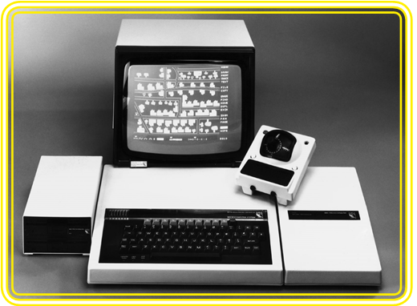
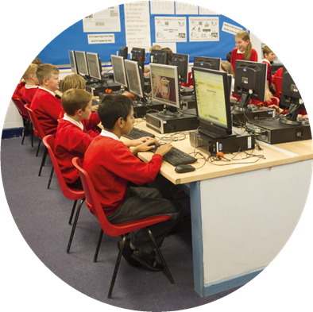

Background
Looking back at the last thirty years or so of computers in primary schools, there are two quite distinct threads: learning about computers and learning with computers. While this publication and the Computing programme of study are concerned with the former, the latter has a crucial role in teaching and learning in the third millennium.
In the earliest days of BBC Micros in primary schools, creative programmers (many of them teachers) developed highly engaging educational software, from simple programs to practise arithmetic and spelling, through simulations and rudimentary virtual worlds, to tools to think with such as Logo. At the same time, a growing number of pupils were being bought home computers, mainly as games consoles, and dabbling with typing in and debugging (correcting) lines of code.
While programming or ‘control’ was an intrinsic part of the first National Curriculum (1990), in which Information Technology Capability formed part of ‘Technology’ as a subject, there was already reference to using software applications for tasks such as creating databases, word-processing, presenting work and modelling.
In most schools, for much of the following two decades, ICT (as the subject became known in 1999) came to be seen as developing pupils’ skills with a set of office-productivity programs, or their educational equivalent. This provided much scope for creative work, some grasp of how information can be structured and some good problem-solving activities, but arguably little insight into computer science.
In recent years, many primary educators have favoured an ‘embedded’ approach to ICT, in which ICT capability could be developed through using computers in the meaning-rich contexts of other subjects. In their 2008 and 2011 reports, Ofsted reported positively on the quality of teaching and achievement in ICT in primary schools in general, but warned of weaknesses in some aspects of the ICT curriculum, such as control and data handling. Ofsted did, however, highlight positive examples of primary practice, such as game design projects using Scratch.
The ‘Next Gen’ report, commissioned by the Department of Culture, Media and Sport on the state of the UK games and visual effects industries, recommended that computer science be brought into the National Curriculum as an essential discipline. Furthermore, in his speech at the Edinburgh Television Festival in 2011, Google’s executive chairman Eric Schmidt described himself as ‘flabbergasted’ that computer science wasn’t taught as standard, and that England thus risked throwing away its great ‘Computing heritage’.
The Royal Society was commissioned by the UK Computing community to investigate the state of Computing education in schools, publishing their Shut Down or Restart? report in January 2012. Their recommendations included a rebranding of ICT, suggesting a possible split of the subject into digital literacy, information technology and computer science, and proposing ‘Computing’ as an umbrella term for the subject as a whole.
With these concerns in mind, the Secretary of State for Education announced at the 2012 BETT Show that he would ‘disapply’ the old programme of study and attainment targets for ICT from September 2012, allowing schools to develop their own schemes of work, and giving them the opportunity to teach programming and other aspects of computer science. Responding to the consultation on disapplication, the Secretary of State announced that ICT was to continue as a National Curriculum subject with a new programme of study.
Subsequently the DfE announced that the British Computer Society and the Royal Academy of Engineering would coordinate the drafting of this new programme of study, drawing on stakeholders from Computing and education. This draft was subsequently revised by the DfE, with the subject name changing from ICT to Computing. There were further revisions after public consultations, with the final version published in September 2013, ready to take effect in all maintained schools in September 2014.
Although the change of name, from ICT to Computing, does reflect a change in emphasis, it’s important to remember that there’s more to Computing than computer science, and that there’s more to computer science than programming. Much that we’ve taught in the past in ICT will fit within the information technology and digital literacy aspects of the Computing curriculum, and schools that have taught the ‘sequencing instructions’ aspects of the old programme of study will be able to build on this foundation as they address the new computer science content.

BBC Micro Computer, c.1980s. Copyright Science and Society Picture LIbrary, Getty Images, Editorial #90766368